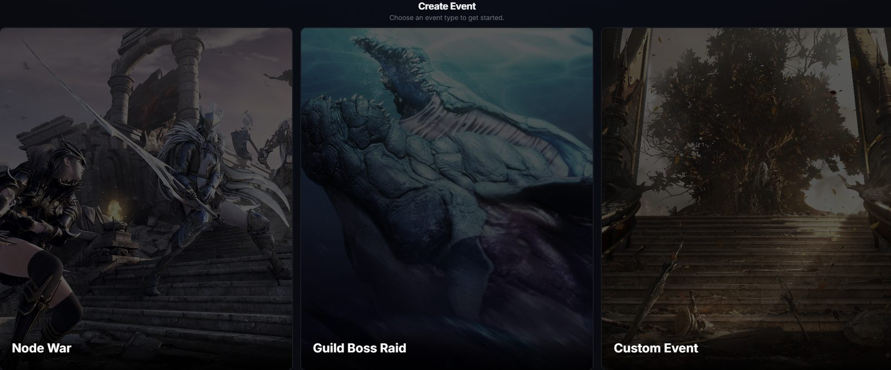
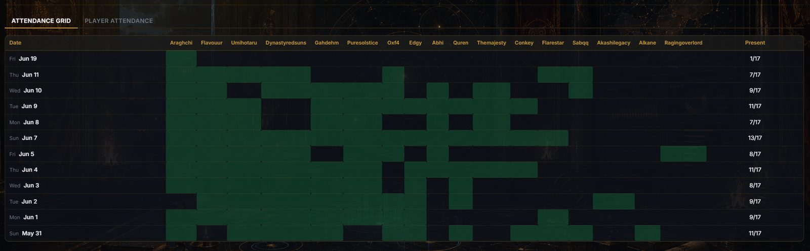
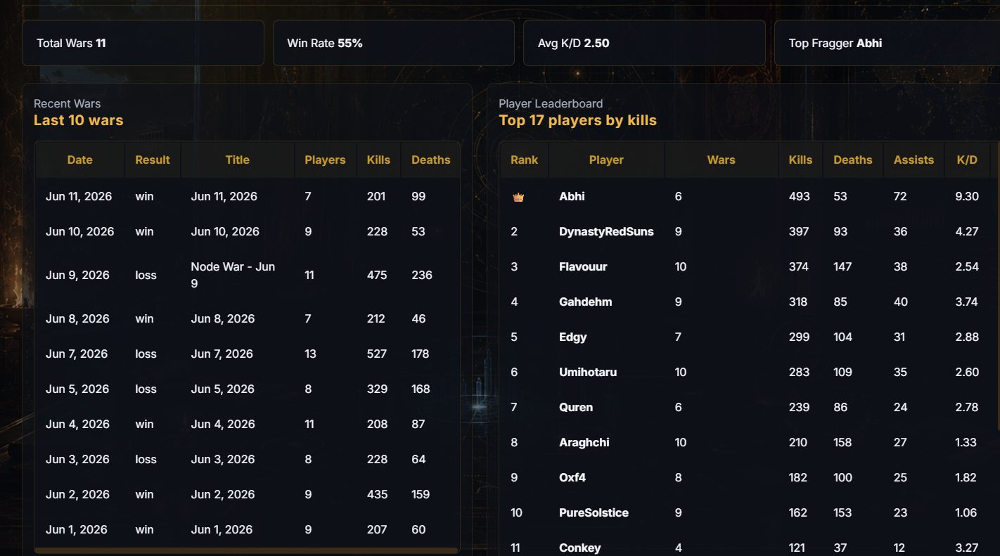

Project Athena
Discord bot and web dashboard that runs Black Desert Online guilds, from Node War sign-ups to post-war stats.
Project Athena started as a roster bot for Node Wars and grew into the guild's command centre. Officers schedule wars in Discord, members sign up from buttons on the announcement, and after the war the scoreboard screenshot turns into stats on the web dashboard.
Event manager
Node Wars, Guild Boss Raids and custom events, created from a Discord wizard (buttons, select menus and modals) or the dashboard. Rosters fill groups like Mainball, Defense, Zerker and Shai with capacity presets per war tier, overflow to Bench when a group is full, and repeat weekly. A minute-based scheduler posts them on time, recovers after restarts and never double-posts.

Live war map
An interactive map of the whole game world built from in-game combat logs. It plots every kill and death where it happened, with a heatmap, filters by region and node, a timeline you can replay through the war, and a cannon calculator for siege distances. Guilds can share a read-only link.

Node War stats
Win rate, kills, deaths, damage and K/D per war and per player, with trends against the previous wars, category leaders, class tracking, player search and side-by-side comparisons. Everything exports to CSV.

Scoreboard OCR
Officers upload the end-of-war scoreboard screenshot and the bot reads every player's numbers with Gemini vision, falling back to Tesseract.js. A separate /ocr command reads in-game chat screenshots in several languages. Each upload lands in a score history that can be reviewed and corrected.

Attendance and guild performance
Who showed up to which war, and how the guild's kills, deaths and damage move over time.


Fishing game
An idle fishing game inside the same bot, based on Black Desert's own fishing system. /fish catches from 302 fish across zones, /sell turns them into silver for better rods, floats and outfits, /enhance upgrades gear with a chance to fail, and /autofish hires a Fisherman who keeps fishing while you're away. Servers can pick a role the bot pings when a sea boss appears.
How it's built
One TypeScript app: the discord.js bot and an Express dashboard with Discord login share state through Supabase, deployed on Railway. Tested with Playwright.